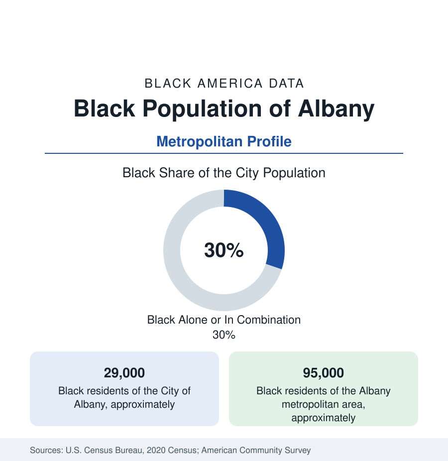

Black Cities
Black Albany: Arbor Hill and New York's Capital Region
Albany holds about 29,000 Black residents in the city and 95,000 across the Capital Region — a community older than the republic it now helps govern. The census profile.

Albany holds about 29,000 Black residents within the city — Black alone or in combination, roughly three in ten of its 99,000 people — and about 95,000 across the Capital Region. Black Albany is among the oldest Black communities in the North: an enslaved and free population in Dutch and English Albany from the 1600s, the Underground Railroad's capital-city station, and today the workforce and constituency of New York's state government — the capital dynamic in its purest American form.
Arbor Hill, the South End, and the Mansion District
The community's geography is the city's northern and southern tiers: Arbor Hill — the historic center along Clinton Avenue and Ten Broeck Street, its brownstones and the Stephen and Harriet Myers Residence (the Underground Railroad's Albany headquarters, now a museum, the city's essential Black landmark) — the Sheridan Hollow and West Hill districts below the hill, and the South End along Pearl Street, the second historic pole. The Empire State Plaza's construction in the 1960s — the monumental government complex that defines modern Albany — cleared the diverse neighborhoods of the city's center (the Gut and the Mansion District's edges, blocks of Black and immigrant Albany erased for the plaza in the era's defining local displacement, its photographic record the city's wound and archive at once). The suburbs record the capital pattern's later chapters: Colonie and the Northway corridor's growing shares, Schenectady's substantial community twenty minutes west (its own GE-built Black history), Troy's across the Hudson, and the professional class's distribution through the region's school-district map.
The State's Workforce in the State's Capital
Albany's Black employment is the public-sector profile at maximum concentration: New York State government is the region's dominant employer, its Albany workforce (the agencies of the Plaza and the Campus, the legislature's staff, the courts and the state university's headquarters) employing Black professionals at the capital premium, with the State University of New York at Albany, the hospital systems (Albany Medical Center, St. Peter's), and the nanotechnology complex (Albany NanoTech's semiconductor research economy, its technician and professional tiers) completing the structure. The indicators show the capital dividend in the region's Black data: metro Black incomes and education levels above the upstate pattern, homeownership rooted in the city's upper wards and the suburbs, against the city's own poverty concentration in the Arbor Hill and South End tracts — the two Albanys of the data separated by the Plaza's marble. The federal layer (the VA, the arsenal at Watervliet) and the nonprofit sector that a capital breeds (the associations and lobbies' staffs) thicken the professional file.
Institutions: The Myers Legacy and the Church Line
The institutional layer is unusually documented: Stephen Myers — the formerly enslaved publisher and organizer who ran Albany's Underground Railroad operations in the 1850s, among the most effective stations in the network's record — anchors a historical layer the city's Underground Railroad History Project maintains; the churches (Israel AME, among the oldest Black congregations in the North, its 1820s roots), the Albany African American History Project's archives, the Brotherhood and civic organizations of the capital's Black professional class, and the Black press's capital tradition (the legislative correspondent's beat as a Black journalism institution of its own). The HBCU thread runs through the capital's peculiar pipeline — Albany's Black families' Southern college ties of the migration era — and the State Museum's Black history exhibitions hold the region's record in the state's own building.
Change and the Estimates
The estimates show the Capital Region's Black population growing through its suburbs and Schenectady's reinvestment corridors while the city's count holds — the state-workforce's stability anchoring the community against the upstate pattern, the NanoTech expansion adding its professional increment, and Arbor Hill's brownstone revival (the Clinton Avenue streetscape investments) reprising the gentrification file in miniature. The school's data (Albany's city district, majority students of color, its high school's academy system) and the university's community partnerships carry the education file, and the region's transit and housing plans record the suburban access question as the current civic agenda.
Reading the Albany Numbers
Albany is the capital profile in its original American edition: a Black community present at the city's founding, abolition's stationmaster in its hall of fame, displaced for the government's marble, and now substantially the government's own workforce. Its 95,000 metro residents hold the data's neatest irony — the people the plaza replaced became the people the plaza employs.
More in Black Cities
Black Atlanta: Population, Distribution, and Growth of a Black Metropolis
Metro Atlanta holds more than two million Black residents — roughly one in three, second only to New York. The suburban distribution, migration history, and composition of Black Atlanta in the census data.
Black New York: The Largest Black Population in America
The New York metropolitan area holds about 3.4 million Black residents — more than any metro in the nation — and the city itself about two million. The census profile.
Black Washington: The District and the Metro
The Washington metro holds about 1.6 million Black residents, and the District itself — long a majority-Black city — now records a Black share near 41 percent. The census profile.
Source: U.S. Census Bureau, 2020 Census; American Community Survey; Population Estimates Program.